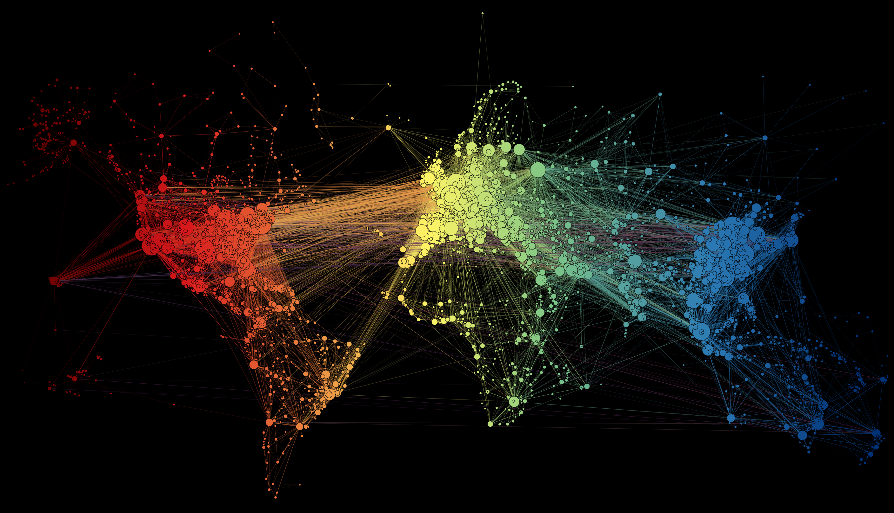

About
Despite continual advances in medicine, science and technology, infectious diseases still pose a significant risk to human and veterinary health worldwide.
In fact, our increasingly connected society only exacerbates the potential for disease spread and the resulting health and economic impact.
Epidemiological modelling provides a tool with which we can combat the fallout from such events. Advancements in this area have provided an array of methods
for understanding the behaviour of infectious diseases, allowing greater power to predict, prevent and control outbreaks. Whilst there may be high-quality
data available, the multi-level interactions between hosts, pathogens and the environment, alongside significant and varied sources of uncertainty, results in
a highly complex problem from a modelling point of view.
In this half-day satellite session, we will focus on a broad range of challenges that arise in the context of epidemiological modelling,
taking advantage of the wide range of disciplines present at the Conference on Complex Systems 2019 (CCS19).
We hope to stimulate discussion across disciplines regarding, but not limited to, issues
with data collection and curation, methodology and computation and the gap between research and policy, for both public and veterinary health scenarios.
Key dates
31st July 2019: CCS 2019 earlybird registration deadline
10th August 2019: Final deadline for satellite presenters to have registered for CCS19
3rd October 2019: Satellite Symposium
Abstract submission
We are inviting submissions for two talk formats:
- Long talk (15 minutes + 5 minutes for questions),
- Short talk (5 minute talk, no immediate questions).
We are strongly encouraging participation in the session from early career researchers in the epidemiological modelling community.
You can submit your abstract via the EasyChair website:
https://easychair.org/conferences/?conf=cemccs2019
Abstracts must be a maximum of 300 words.
Schedule
A PDF of the schedule may be downloaded
here.
| Time | Slot | Description |
|---|---|---|
| 09h00 | Introduction | - |
| 09h15 | Vittoria Colliza | How big does Big Data need to be? An epidemic modeling perspective |
| 10h00 | Sheryl Chang | Impact of committed vaccine recipients on vaccination behaviours in a SIR-network model |
| 10h06 | Sophie Meakin | Challenges in outbreak modelling and analysis |
| 10h12 | Sam Scarpino | ILI is not flu |
| 10h25 | Coffee Break | |
| 11h00 |  Elpida Tzafestas | Influence of Schooling Structure on Epidemic Spread and Implications for Policy |
| 11h20 | Jorge P. Rodríguez | Structure and dynamics of contact patterns among structured populations in South Africa |
| 11h40 | Xiangrong Wang | Directionality Reduces the Impact of Epidemics in Multilayer Networks |
| 12h00 | Break | |
| 12h10 | Cameron Zachreson | Agent-based Modelling of Epidemics: the challenges of working with anonymised survey data |
| 12h30 | Jayanta Kshirsagar | Modelling at the speed of thoughts |
| 12h50 |
 Open discussion
Open discussion
|
A forum to overview the challenges raised during the session. Share thoughts on how the scientific community can tackle the challanges in a collaborative manner. |
| 13h00 | Session ends |
Invited Speaker
-
Dr. Vittoria Colizza
Website
Organisers
Conference

Contact
Please email any questions or information requests to our email address.